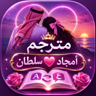

مترجم
أمجاد ❤️ سلطان
تكلم • ترجم • تعلّم الإنجليزية
الترجمة الإنجليزية
النطق بالعربي (للكلمات المتوفرة)
إضافة للشاشة الرئيسية
افتح الموقع في سفاري، اضغط مشاركة، ثم «إضافة إلى الشاشة الرئيسية».
الترجمة عبر خدمة MyMemory على الإنترنت؛ يُرسل النص إليها. لا تكتب معلومات خاصة. التعرف على الكلام يعتمد على المتصفح وقد يرسل الصوت إلى خدمة الجهاز.